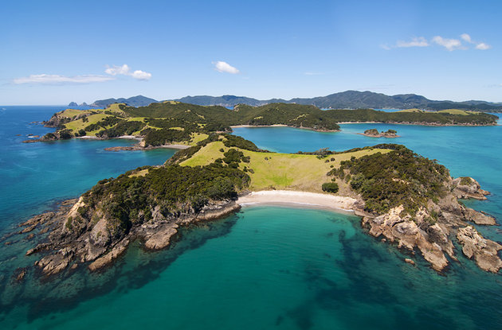
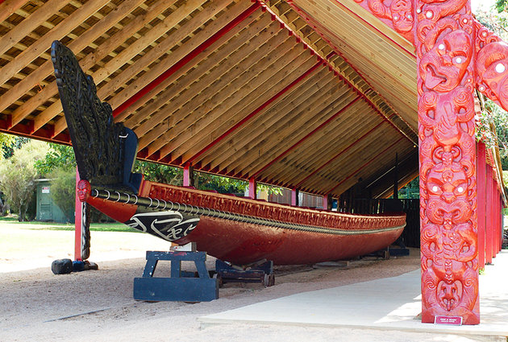
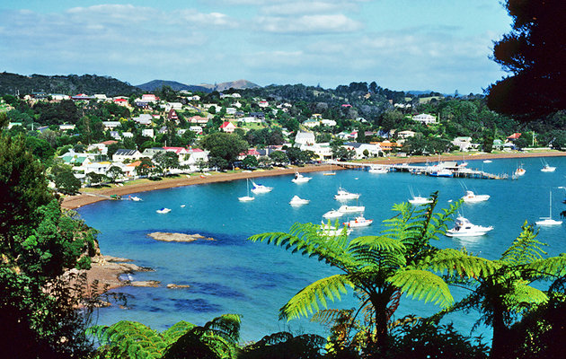
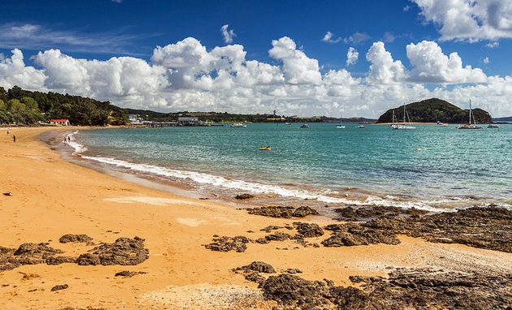
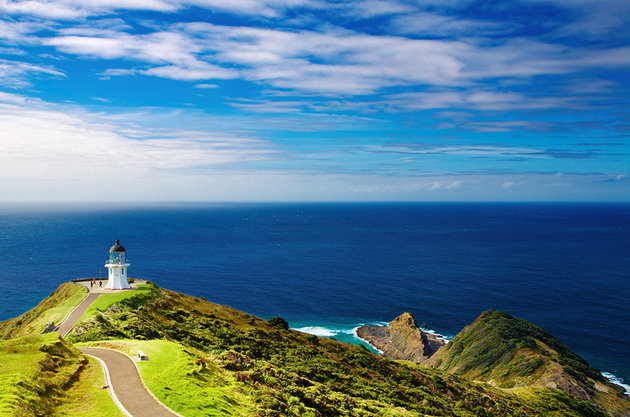

Famous Tourist spots in Bay of Islands

1.Bay of Islands,Maritime Park
Extending from Whangaruru in the south, to Whangaroa in the north, the Bay of Islands Maritime Park is a glittering blue
swath of warm coastal waters, scattered with 144 islands and home to dolphins and whales.
This sub-tropical watery playground is the main reason travelers head north from Auckland. Scenic cruises, boat trips, and kayaking tours depart
from the Bay of Islands base towns of Russell and Paihia and make various loops around the bay, visiting secluded coves for swimming stops
and offering plenty of opportunities to spot sea life. The highlights of the maritime park are Cape Brett and its lonely lighthouse, sailing
through the bay's famed Hole in the Rock formation, and visiting Urupukapuka Island.

2.Waitangi Treaty Grounds
The Treaty House, which was originally built in 1833 as the private residence of James Busby, the British government's representative in the colony,
has been beautifully restored and is now a small museum with exhibits on the treaty signing and early colonial life in the northland. Opposite is
Waitangi's Maori Meeting house, erected in 1940 on the centenary of the treaty signing. The meeting house's intricate interior carvings are the work of famous Maori
wood-carver Pine Taiapa.Afterwards, stroll via Hobson Beach to the Waka House, which displays the largest ceremonial war canoe in the world, carved from three kauri trees.

3.Russell
Russell, originally called Kororareka, is one of New Zealand's quaintest towns, founded in 1843 as a whaling station and trading post and with
much of its original character preserved. Due to the town's early foundations, it contains some of the country's most historic buildings. Christ
Church (1835) is New Zealand's oldest surviving church, and down at the harbor front is the Old Customs House (now the town's police station) built
in 1870. Russell Museum sits on the site of a former Maori pa (fortified village) and holds exhibits of early life in the Bay of Islands during the colonial era.

4.Paihia
Paihia is the main base-town of the Bay of Islands, offering plenty of opportunities to get out onto the waters of the Bay of Islands
Maritime Park, with Paihia wharf the main jumping-off point for dolphin and whale-watching trips and scenic cruises around the islands
of the bays. The Waitangi Treaty Grounds are only two kilometers north, and town itself is a relaxed place full of quirky cafés and restaurants
serving up super-fresh seafood.

5.Cape Reinga at the Northern Tip of New Zealand
North of the Bay of Islands is the Northland region's other big tourist attraction; the northern tip of New Zealand at Cape Reinga, where
the Tasman Sea and Pacific Ocean meet and surge together. This slither of land jutting out into the sea is marked by a lonely lighthouse and
a sacred 800-year-old pohutukawa tree. According to Maori legend, the tree is where the spirits of the dead jump off to journey back to the Maori
ancestral home of Hawaiki.